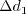

|
Langley Research CenterTurbulence Modeling Resource |
The Explicit Algebraic Stress k-omega Turbulence Model
This web page gives detailed information on the equations for various versions of Explicit Algebraic Stress Models (EASM) in k-omega form. Note: EASMs are also known as Explicit Algebraic Reynolds Stress Models (EARSM) and Algebraic Reynolds Stress Models (ARSM), but the monikers EASM, EARSM, and ARSM refer to the same thing. EASMs as a class have been developed by several independent groups over the years. As a result, it is difficult to present the many variations completely and cohesively. Currently, only a small subset is given. If any particular variant has been overlooked, please report it to the page curator. It should also be noted that the distinction is drawn between nonlinear EASMs (for which expansion coefficients are extracted directly from Reynolds stress transport equations) and other types of nonlinear eddy-viscosity models (not described on this page). See Phil. Trans. R. Soc. A (2007) 365, pp. 2389-2418.
Nonlinear EASMs are fundamentally different
from linear eddy viscosity models in the equation for obtaining the modeled turbulent stresses in the
Reynolds-averaged or Favre-averaged Navier-Stokes equations. Linear models use the Boussinesq
assumption for the constitutive relation:
Unless otherwise stated, for compressible flow with heat transfer this model is implemented as described on the page
Implementing Turbulence Models into the Compressible RANS Equations, with perfect gas
assumed and Pr = 0.72, Prt = 0.90, and Sutherland's law for dynamic viscosity.
Return to: Turbulence Modeling Resource Home Page None of the EASM k-omega versions listed here are considered "standard".
Nonlinear EASM k-omega (2005) Model
(EARSMko2005)
This model is typically known as the explicit algebraic Reynolds stress model,
or EARSM (with an
additional "R" in its name). Developed by Hellsten, Wallin, and Johansson, its main references are:
In this model, the turbulent stress relationship can be given by:
Note that for 2-D flows, the constitutive model can, if desired
(choosing a different set of basis terms) be simplified to:
The two-equation model (written in conservation form) is given by the following:
where and the turbulent eddy viscosity is computed from:
The variable coefficient Farfield boundary conditions are not specified for this model. However, the reference states that
the model is reasonably insensitive to freestream values of k and
Solid wall boundary conditions are:
The constants in the scale-determining k- Nonlinear EASM k-omega (2005) Model
with Curvature Correction (EARSMko2005-CC)
This model is the same as the (EARSMko2005), with the exception
that
The references for this curvature correction are:
Nonlinear EASM k-omega (2005) Model
with Better Approximation for 3-D Flows (EARSMko2005a), (EARSMko2005a-CC)
The equations are the same as (EARSMko2005) or
(EARSMko2005-CC), with the exception that N
gets augmented by an additional term:
The references for this improved 3-D approximation are:
Nonlinear EASM k-omega (2003)
Model (EASMko2003)
The references for this nonlinear two-equation model are:
However, note that the journal reference (EASMko2001)
used different values for two of the
constants ( In this model, the turbulent stress relationship is derived based on a three-basis approximation. It is given by:
The two-equation model (written in conservation form) is given by the following:
where
and the turbulent eddy viscosity is computed from:
where The variable coefficient is obtained
by solving the cubic equation:
where
The correct root to choose from this cubic equation is the root with the lowest real part.
The degenerate
case when If If If In this model, is limited to be no
smaller than 0.0005.
Other parameters are:
The function where
The P term in the k-equation is limited, replaced by:
The farfield boundary conditions given in this reference are:
The solid wall boundary conditions are the same as those recommended in
Menter, F. R., AIAA Journal, Vol. 32, No. 8, August 1994, pp. 1598-1605,
https://doi.org/10.2514/3.12149:
where  is the distance from the
wall to the nearest field solution point.
The constants are:
Nonlinear EASM k-omega Model
with Approximate Strain-related Source Term
(EASMko2003-S, EASMko2001-S)
The equations are the same as given above (EASMko2003)
or (EASMko2001),
with the exception that the production term P (in both equations) is approximated with the following:
The references are the same as listed above for (EASMko2003).
Return to: Turbulence Modeling Resource Home Page
Recent significant updates: Responsible NASA Official:
Ethan Vogel
For nonlinear EASMs, this equation is altered to include
additional (nonlinear) terms, as detailed below.
Thus, including nonlinear turbulence models like
EASM is not simply a matter of computing 
 alone. One must also insure that the turbulent stress terms
alone. One must also insure that the turbulent stress terms
 are computed appropriately to include the
additional nonlinear components in the Navier-Stokes equations.
are computed appropriately to include the
additional nonlinear components in the Navier-Stokes equations.
where


 is the density
and
is the density
and
 is the
molecular dynamic viscosity, and
is the
molecular dynamic viscosity, and


 is obtained
from:
is obtained
from:
However, if the 2-D flow (superscript (2D)) constitutive model is used, then

is used instead. Furthermore,


and N is obtained from the solution of a cubic equation. The solution is given by:


where
![N = \frac{A_3'}{3} + 2\left( P_1^2 - P_2 \right)^{1/6}
{\rm cos} \left[ \frac{1}{3} {\rm cos}^{-1} \left( P_1 / \sqrt{ P_1^2 - P_2} \right) \right]](earsmko_eqns/img29.png) for
for

![P_2 = P_1^2 - \left[ \frac{A_3'^2}{9} + \left( \frac{9}{10} \right) II_{S} + \frac{2}{3} II_{\Omega} \right]^3](earsmko_eqns/img32.png)

![\beta_1^{(eq)} = - \frac{6}{5} \left[ \frac{N^{(eq)}}{\left(N^{(eq)}\right)^2 - 2 II_{\Omega}} \right]](earsmko_eqns/img35.png)

 , provided that excessively high
values are avoided.
, provided that excessively high
values are avoided.

where

![S_R = \left[ \frac{50}{{\rm max} \left(k_s^+, k_{s, min}^+ \right) } \right]^2](earsmko_eqns/img41.png) for
for
with specified for rough walls, and
for smooth walls:
and is the inner-scaled wall distance of the
first solution point next to the solid wall.
![k_{s, min}^+ = {\rm min} \left[ 4.3 \left(d_1^+ \right)^{0.85}, 8 \right]](earsmko_eqns/img46.png) model are determined via:
model are determined via:
where C represents any of the model coefficients, and

![\Gamma = {\rm min} \left[ {\rm max} \left( \Gamma_1, \Gamma_2 \right), \Gamma_3 \right]](earsmko_eqns/img50.png)

where d is the distance to the nearest wall. The coefficient values are:


where


and ,
 , and
, and
 is the Levi-Civita symbol, defined as
is the Levi-Civita symbol, defined as

with all other zero.
with
![N_{improved} = N + \frac{162 \left[ IV^2 + \left( V - \frac{1}{2} II_S II_{\Omega} \right) N^2 \right]}
{20 N^4 \left( N - \frac{1}{2} A_3' \right) - II_{\Omega} \left( 10 N^3 + 15 A_3' N^2 \right)
+ 10 A_3' II_{\Omega}^2}](earsmko_eqns/img70.png)
 and
and
 );
those listed in the NASA/TM reference (same as below) are considered better,
particularly for jet-type flows.
);
those listed in the NASA/TM reference (same as below) are considered better,
particularly for jet-type flows.
![\tau_{ij} = 2 \mu_t \left(S_{ij} - \frac{1}{3} \frac{\partial u_k}{\partial x_k} \delta_{ij}
+ \left[a_2 a_4 \left( S_{ik}W_{kj} - W_{ik}S_{kj}\right) - 2 a_3 a_4 \left(S_{ik}S_{kj} - \frac{1}{3}S_{kl}S_{lk}\delta_{ij}\right)
\right] \right) -
\frac{2}{3} \rho k \delta_{ij}](easmko_eqns/img6.png)
![\frac{\partial (\rho k)}{\partial t} + \frac{\partial (\rho u_j k)}{\partial x_j}
= \cal P - f_{\beta^*} \rho \omega k + \frac{\partial}{\partial x_j}
\left[\left(\mu + \sigma_k \mu_t \right)\frac{\partial k}{\partial x_j}\right]](easmko_eqns/img7.png)


 is the density
and
is the density
and
 is the
molecular dynamic viscosity.
is the
molecular dynamic viscosity.


 must be avoided. The
appendix of Journal of Aircraft, Vol. 38, No. 5, 2001, pp. 904-910,
https://doi.org/10.2514/2.2850 provides an algorithm for
determining this root, as follows.
must be avoided. The
appendix of Journal of Aircraft, Vol. 38, No. 5, 2001, pp. 904-910,
https://doi.org/10.2514/2.2850 provides an algorithm for
determining this root, as follows.
 , then
, then
Otherwise, define:


 , then
, then

 , then
, then


 is given by:
is given by:
 when
when


Also, the variables  ,
, and
,
, and
 (as defined)
are all limited to be negative
(this is the realizability constraint).
(as defined)
are all limited to be negative
(this is the realizability constraint).

where  ,
, and
,
, and
 are the reference (typically freestream) speed of sound,
density, and viscosity, respectively.
are the reference (typically freestream) speed of sound,
density, and viscosity, respectively.


6/30/2015 - mention Pr, Pr_t, and Sutherland's law
Page Curator:
Clark Pederson
Last Updated: 11/08/2021